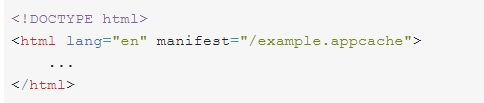

Offline y Almacenamiento
Si bien todos los navegadores tienen mecanismos de almacenamiento en caché, estos sistemas no son fiables y no siempre funcionan como debieran. HTML5 permite resolver algunas de las molestias asociadas al trabajo sin conexión mediante la interfaz ApplicationCache.
Algunas de las ventajas que conlleva el uso de ésta caché para una aplicación son:
- Navegación sin conexión: los usuarios pueden explorar todo el sitio web sin conexión.
- Velocidad: los recursos almacenados en caché son locales y, por tanto, se cargan más rápido.
- Reducción de carga del servidor: el navegador solo descarga recursos del servidor que han cambiado.
Para poder trabajar sin conexión, una aplicación únicamente necesita de un archivo de manifiesto, el cual indica al navegador que ficheros debe almacenar en la caché local. El contenido del manifiesto puede ser tan simple como un listado de archivos. Una vez que el navegador ha descargado y almacenado los ficheros (html, CSS, imágenes, javascripts, etc), el navegador hace uso de estos ficheros, incluso cuando el usuario actualiza la página en su navegador.
Además de especificar qué ficheros van a ser almacenados en la caché, es posible indicar cuáles no tienen que serlo, y por tanto obligar al navegador a realizar una petición de dichos ficheros al servidor. Finalmente, si intentamos acceder a un fichero no almacenado en local, y no disponemos de conexión, podemos mostrar un recurso que previamente hemos almacenado en la caché.
El archivo de manifiesto es lo que le indica al navegador cuando y qué tiene que almacenar en su caché, y qué tiene que traerse de la Web. Indicar al navegador el manifiesto que tiene que utilizar es muy sencillo:

El atributo manifest debe estar incluido en todas las páginas de nuestra aplicación, que queramos que se almacenen en la caché. Es decir, además de los ficheros indicados en el manifiesto, la propia página que incluye el manifiesto es almacenada en la caché. El navegador no almacenará en caché ninguna página que no contenga el atributo manifest (a menos que esa página aparezca explícitamente en el propio archivo de manifiesto).
El atributo manifest puede señalar a una URL absoluta o a una ruta relativa, pero las URL absolutas deben tener el mismo origen que la aplicación web. Un archivo de manifiesto puede tener cualquier extensión, pero se debe mostrar con el tipo MIME correcto: